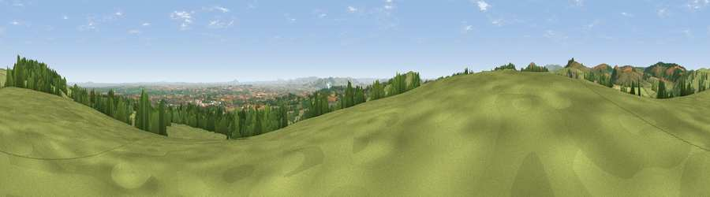

Viewpoint near Rhydycroesau
#8298 in England · top 32% of its area beats it · near RhydycroesauWhere it is
The exact computed spot (SJ 25512 29350). Click the marker for map links.
The view, rendered

A 360° render of this exact spot computed from the terrain model, tree cover and land cover — summer colours, afternoon light, calibrated against photographs of famous viewpoints. Real trees, hedges and buildings will differ in detail.
The panorama
Grey silhouette: terrain skyline in each direction (720 bearings, Earth curvature and refraction included). Dashed green: skyline with trees (+15 m) and buildings (+8 m) as obstacles. Blue strip: how far the ground is visible on each bearing.
Where the view opens
Wedge length = distance to the farthest visible ground on that bearing (vegetation-aware). Rings at 10, 25 and 50 km.
What fills the view
67% grassland · 21% woodland · 9% cropland · 2% built-up
Angular shares of the visible panorama (visual magnitude), not map area. Landscape diversity 0.40 (0–1 Shannon).
Key numbers
More beautiful places nearby
The staircase of upgrades: each row has a higher view potential than everything closer. Driving times are estimates from straight-line distance, calibrated against real road routing — check an actual route before setting out.
| Place | Direction | Drive | Score |
|---|---|---|---|
| Viewpoint near Trefonen | SSW · 2 km | ~6 min | 75.0 |
| Viewpoint near Melverley | SSE · 17 km | ~29 min | 78.2 |
| Viewpoint near Halfway House | SSE · 17 km | ~29 min | 83.3 |
| The Lawley | SE · 40 km | ~59 min | 85.8 |
| Viewpoint near Little Wenlock | ESE · 43 km | ~63 min | 86.6 |
| North Hill | SSE · 98 km | ~122 min | 86.8 |
| Worcestershire Beacon | SSE · 98 km | ~123 min | 87.1 |
| Viewpoint near Cartmel | N · 151 km | ~173 min | 87.2 |
52.85647, -3.10769 · source: screening · position refined by local search. Computed location — check access rights before visiting.